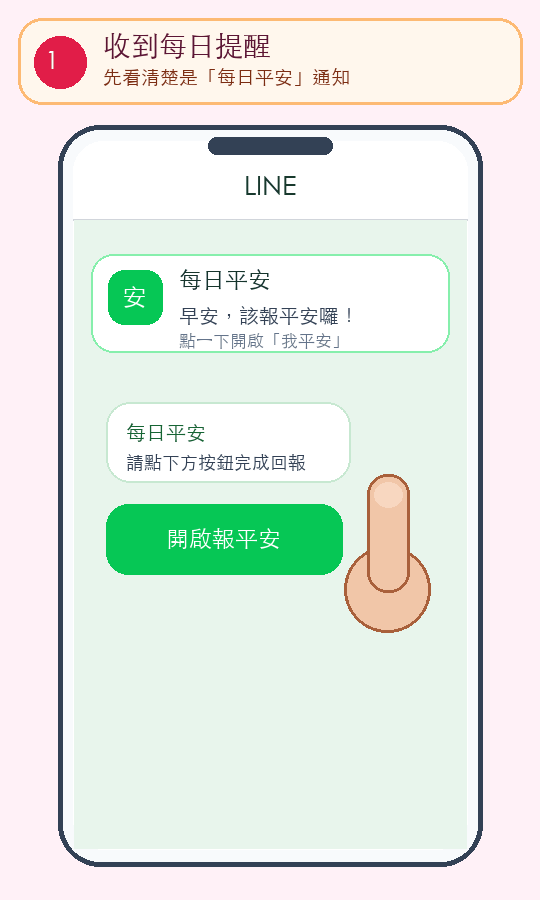

1先加入「每日平安」
第一次使用，請先按下面綠色按鈕，把「每日平安」加入 LINE 好友。加入後，您才能收到每天的報平安提醒。
每天 10 秒，報個平安
動畫會自動重播。照著手指點，不需要輸入文字。

第一次使用，請先按下面綠色按鈕，把「每日平安」加入 LINE 好友。加入後，您才能收到每天的報平安提醒。
按「一鍵登入 LINE」，同意登入後會回到每日平安的內頁，不需要另外記帳號或密碼。
依畫面填寫您的稱呼、地區、每天提醒時間，以及要邀請的守護人姓名、關係與電話。電話可用在緊急狀況或聯絡不上本人時。
按「一鍵分享守護卡」，選一位信任的 LINE 好友，再把專屬守護卡傳給對方。
對方點開守護卡後，填寫「和您的關係」及電話，再按同意，就完成雙方綁定。
收到 LINE 提醒後，開啟每日平安，按一次綠色的「我平安」。看到成功日期與時間，就完成今天的回報。
您可以選 24 小時、36 小時、48 小時或 72 小時，預設 48 小時。超過設定時間還沒報平安，系統會先通知本人。
199 月費／年費每日固定 1 次；399 月費／年費預設 1 次、可選 1～2 次；799 月費／年費預設 2 次、可選 1～3 次。預設時段依序是 12:00、18:00、22:00。
799 月費最多 1 群；799 年費最多 3 群；每群最多 50 人。可以把重要的家人、已綁定守護人及緊急聯絡人加入群組，一起查看群組內的平安訊息。
安全守護：外出、看診或夜歸時，可以在指定時段分享位置；時間到會自動停止。
SOS／需要幫忙：連續按 3 次才會送出，避免誤觸。送出前會取得位置，並通知您選擇的守護人。